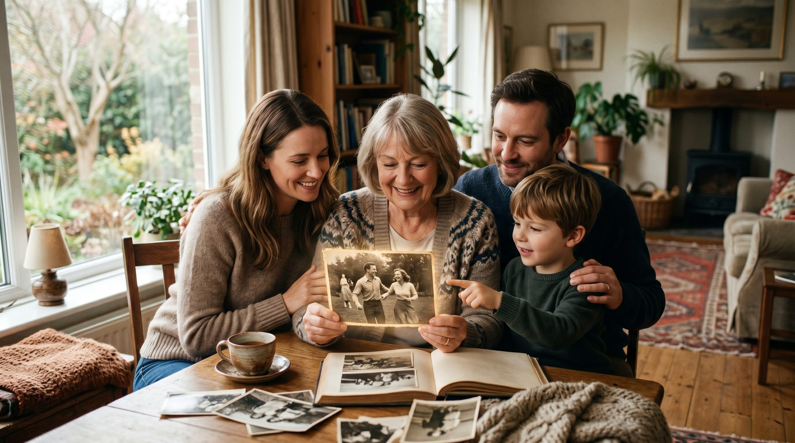

Годовщина — это не просто дата, это возможность оживить самые яркие моменты вашей жизни. Создание видео-открытки с помощью технологии VideoAI поможет вам сохранить и подарить эти воспоминания заново.
Видео-открытка на годовщину — это не просто подарок, это мост между прошлым и настоящим. Представьте себе, как приятно будет вашим близким увидеть ожившие моменты из прошлого — будь то ваш первый танец или совместное путешествие. Такие видео работают как эмоциональный якорь, возвращая нас в те времена, которые мы хотим сохранить в памяти.
Оживление старых фотографий особенно актуально для семейных архивов. Как оживить старое фото — это вопрос, который задают многие, и VideoAI предлагает доступное решение. Используя технологию Kling 2.5, вы можете буквально вдохнуть жизнь в ваши фотографии, делая их частью эмоционального видео.
Выбор правильного фото — это ключевой шаг в создании видео-открытки. Для наилучшего результата выбирайте фотографии, где человек изображен анфас, с четкими чертами лица. Избегайте групповых снимков, так как фокус на одном лице даст лучший эффект.
Если у вас есть старые или поврежденные фотографии, не стоит беспокоиться. VideoAI справляется и с такими вызовами, позволяя вам оживить даже фото дедушки или фото бабушки. Главное — это резкость изображения и четкость лица.
Начать работу с VideoAI невероятно просто. Вам не нужно регистрироваться, достаточно перейти на сайт botisk.ru и загрузить выбранное фото. После загрузки система предложит вам выбрать стиль движения, который займет не более 60 секунд. Первое видео совершенно бесплатно, что позволяет вам оценить качество и результат без рисков.
Процесс создания видео занимает всего несколько минут, а интуитивно понятный интерфейс делает его доступным даже для тех, кто никогда не сталкивался с подобными технологиями ранее. Попробуйте создать свою первую видео-открытку, чтобы убедиться в этом самостоятельно.
| Способ | Время | Цена | Результат |
|---|---|---|---|
| VideoAI | ~5 минут | Первое бесплатно, далее от 290р за 10 видео | Высокое качество, быстрое создание |
| Студия | 3-5 дней | от 5000р | Профессиональное качество, высокая цена |
| Фрилансер | 2-4 дня | от 1500р | Разное качество, средняя цена |
| Зарубежные сервисы | ~10 минут | от $10 (около 800р) | Высокое качество, сложности с оплатой |
Без регистрации. Первое видео — бесплатно. Загрузите снимок — получите живое видео за 60 секунд.
Создать видео из фото →Создание видео-открытки через VideoAI занимает около 5 минут. Этот процесс включает загрузку фото и выбор стиля движения.
Да, VideoAI позволяет оживлять даже старые и поврежденные фотографии, главное — чтобы лицо было чётким и резким.
Оплата производится картами РФ. Первое видео бесплатно, а далее стоимость начинается от 290 рублей за 10 видео.
Нет, регистрация не требуется. Вы можете сразу приступить к созданию видео, просто загрузив фото на сайт.